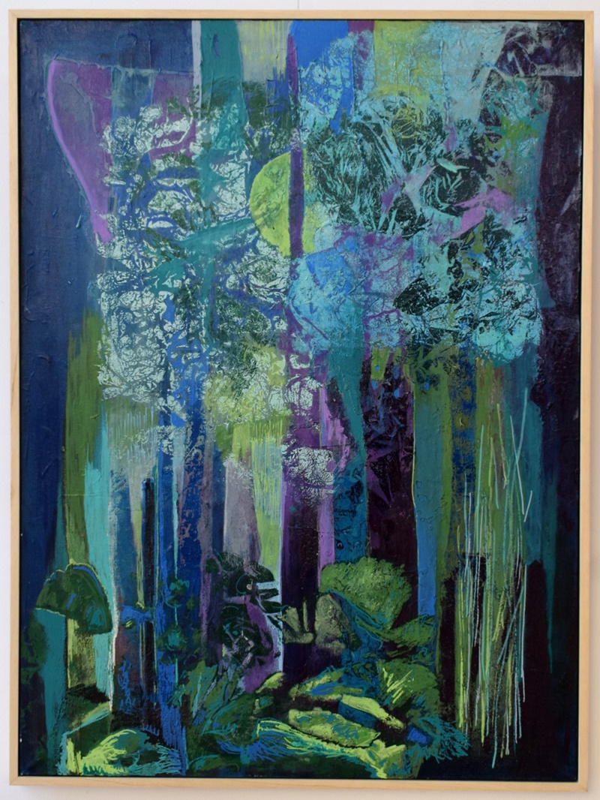
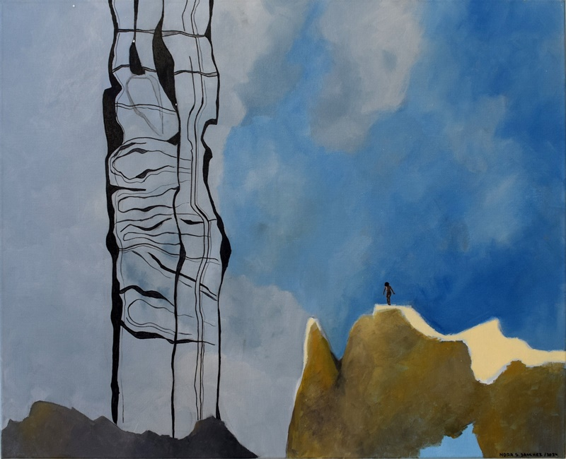
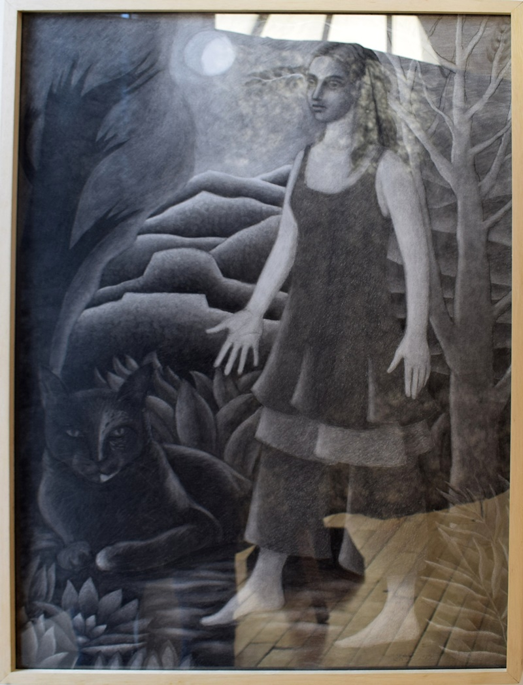
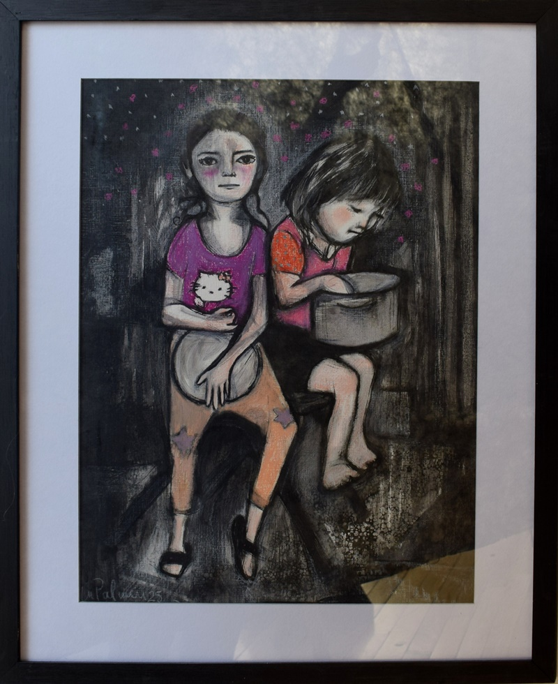
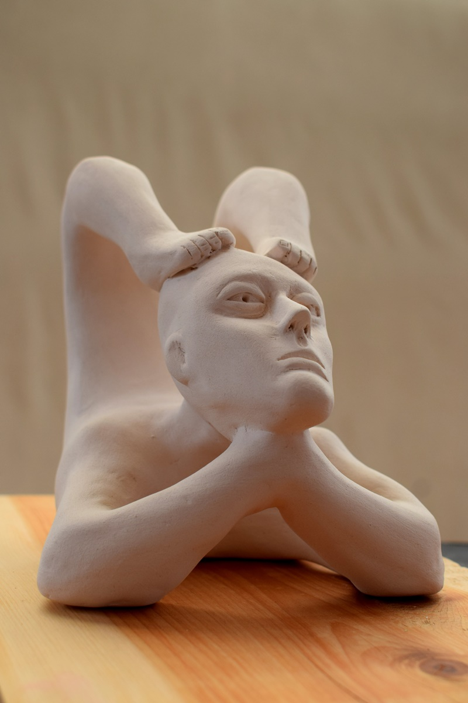

Información de los Jurados

Mariela Leticia Barrientos
Artista visual, docente. Nació en La Plata en el año 1973. Se formó como Profesora en Artes Plásticas orientación Escultura/Grabado en la Facultad de Bellas Artes, Universidad Nacional en La Plata, Buenos Aires. Cursó 4 años en el Conservatorio
de Música Gilardo Gilardi. Realizó talleres y seminarios con Benavidez Bedoya, Antonio Pujía, Héctor Medici, Graciela Taquini. Proyecto Isla Victoria: Arte/filosofía/naturaleza en la Isla Victoria Parque Nacional Nahuel Huapi, 2019.Bariloche.
Diplomatura de Arte aplicada a la sociedad Uberbau_house. 2021. Brasil. Residencia transdisciplinaria Añil. 2025.Esquel.
Ha participado en salones y exposiciones individuales y colectivas desde el 2002 hasta la fecha. Participó del Salón Provincial de Artes Plásticas Florencio Molina Campos en La Plata, Bs As.; II Bienal del libro de artista en el Museo
Carnacini en San Martín, Bs As.; Muestra Migrantes en Jungla Habitat Cultural en Almagro, Bs As.; XIII Salón de Artes Visuales MACA en Junín, Bs As.; Salón Soler de pequeño formato en Palermo, Bs As.; XXI Salón de Artes Plásticas de Esquel,
Chubut. ; II Salón Soler pequeño formato para disidencias en Palermo, Bs As. Muestra colectiva del laboratorio en el Museo de la Patagonia, Bariloche. 2019 Muestra en CCEM de Parirás con dolor y otras maldiciones junto a la artista visual
Ruth Mariel Carvalho Rodrigues curada por Sabrina Ayroldi Chenot. 2021– Otras Conversas muestra instalativa y con participación de la comunidad en el CCEM. Parirás con dolor y otras maldiciones en Sala chapitel de San Martín de los Andes.
2021-Acción colectiva ecotono IV Distancia y desplazamiento. Atlas óseo muestra instalación en CCEM . 2022. Muestra Individual Celebración. Instalación en Casa galería Fud. Esquel 2023. Segundo premio en Salón de artes plásticas XXIV-
Dibujo . Esquel. Gran premio de honor Salón de artes plásticas XXV.2024. Esquel. Mención en dibujo del Salón provincial de Chubut. 2024. Rawson. Seleccionada en el Salón de pequeño formato del Museo Carnacini en San Martín, Bs As. Estamos
Bárbaros, los fantasmas de mi vida. Muestra individual multidisciplinar con acciones en vínculo con la comunidad en espacio Turba. 2025. Esquel
Eva Farji
nació en Petaj-Tikva (Israel) el 20 de junio de 1978. Es Licenciada en Artes, orientación plástica, por sus estudios realizados en la Facultad de Filosofía y Letras de la UBA. Se desempeña como especialista en Artes Plásticas en la Dirección
de Asuntos Culturales del Ministerio de Relaciones Exteriores desde el año 2006.
Ha realizado la curaduría de exposiciones, tales como la muestra “Grabado Argentino Actual. Estampas, Exlibris e ilustraciones” en el Museo de la Estampa y el Diseño “Carlos Cruz Diez”, de la ciudad de Caracas, Venezuela entre los meses
de octubre de 2013 y febrero de 2014, con el auspicio de la Embajada Argentina en ese país; “Tesoros Escondidos. Ex libris como puente entre culturas Catalunya-Argentina”, en el Casal de Catalunya de Buenos Aires, año 2010 y, recientemente,
la exposición “Cuerpo, Memoria e Identidad” en el Centro cultural de la Cooperación “Floreal Gorrini”, abril de 2018, entre otras.
Se dedica a la difusión del grabado y el exlibris, habiendo publicado en distintos medios dedicados a las artes gráficas, tales como Estampa11 (Universidad de Cuyo), el III Congreso Internacional de Artes en Cruce, Jornadas del Inetituto
Payro (ambos de la facultad de Filosofía y Letras, UBA), ente otros. Integra la Comisión Directiva de Xylon Argentina, sociedad de grabadores, y dirige su boletín informativo.
Como artista plástica, se especializó en grabado en el taller de grabado de Osvaldo Jalil y participa activamente de salones y exposiciones de artes gráficas del ámbito nacional e internacional. Entre las distinciones obtenidas se encuentran:
1er premio de grabado xilográfico “La Torre d’ Encenall” (Catalunya) 2015, mención del jurado en la Bienal de Grabado del Museo Víctor Roverano de Quilmes, 3er premio en el Salón de Pequeño formato “50 años de la SAAP”, primer premio del
Salón de Arte Sacro del Museo Claudio León Sempere de Burzaco. También se ha desempeñado como jurado en certámenes de esta disciplina en el ámbito nacional.
Integró el proyecto "Ex Libris: Huella de Identidad", exposición acompañada de charlas y actividades educativas presentada de manera itinerante en la Galería Ática de la Ciudad de Buenos Aires, y en distintos museos y centros culturales
del país, tales como el Centro Cultural Melipal de Esquel, el Centro Cultural "Islas Malvinas" de La Plata o la Biblioteca Argentina de Rosario.
Ha realizado ilustraciones para ediciones de bibliófilos, de las cuales cabe mencionar el Nuevo Testamento y la Balada de la Cárcel de Reading, de Oscar Wilde. Vive y trabaja en Buenos Aires.
Nahuel Sanchez Tolosa
1988 Patagonia Austral Argentina.
Artista visual, educador e investigador nómada. Maestrando en Educación Artística con mención en Artes Visuales por la Universidad Nacional de Rosario.Su formación académica resulta de un cruce en universidades de Córdoba, Rosario y Brasil.
Actualmente se desempeña como profesor de artes en diferentes niveles educativos en la ciudad de Córdoba como en la Licenciatura en Artes Mediales de la Universidad Provincial de Córdoba. Reside de manera combinada entre la ciudad de Córdoba
Capital y José de la Quintana en el Valle de Paravachasca. Su producción artística está relacionada a su interés por el paisaje y su diálogo y tensión con el cuerpo como vector de experiencia reflexionando sobre la intersección: arte,
educación y ciencia. En sus prácticas indaga fundamentalmente en los andamiajes entre especies humanas y no humanas desde una perspectiva Latinoamericana, nómada y colectiva.
Ha participado en muestras individuales y colectivas en diferentes lugares de Argentina, Chile,Colombia, Cuba, México y España. También participa de manera activa en residencias artísticas y el último año formó parte de la Bienal Internacional
de Arte de Río Negro y de la XV Bienal de La Habana.Es el creador y coordinador del Laboratorio Intermitente, un espacio para las prácticas artísticas contemporáneas que pone en diálogo a través de diferentes formatos de trabajo y producción
a diversos actores del campo del arte de Argentina y otros países. Además co-dirige el Club de Arte Transcordillerano un proyecto de Intermitente y Análogo Labs.
Gran Premio de Honor - Municipalidad de Esquel
{kind=link}
Premio Autor Local Griselda Cea
{kind=link}
Pintura
1º Premio Pintura
Cooperativa 16 De Octubre - Cabañas Laderas Verdes - Bon Vivant - Fg Matafuegos
{kind=link}
2º Premio Pintura
Mayorista Autoservicio Victor Hugo Serra
{kind=link}
Mención Pintura
{kind=link}
Finalistas Pintura

{kind=link}
Autor: María Marta Massacese Miguel
Título: Hay lugar
Localidad: Esquel, Chubut
{kind=link}

{kind=link}
Autor: Nora Silvia Sanchez
Título: El mundo de Albertino
Localidad: Rawson, Chubut
Seleccionados
{kind=link}
{kind=link}
{kind=link}
{kind=link}
{kind=link}
{kind=link}
{kind=link}
{kind=link}
{kind=link}
{kind=link}
{kind=link}
{kind=link}
{kind=link}
{kind=link}
{kind=link}
{kind=link}
{kind=link}
Dibujo
1º Premio Dibujo
Gim Center - Niceto Automotores - El Sendero De Las Flores - Fieltro Patagonico

Autor: Marcela San Martín
Título: Palabras silenciosas
Localidad: Puerto Madryn, Chubut
2º Premio Dibujo
Librerias Y Jugueterias "Jumbo" Y "Escencia"
{kind=link}
Mención Dibujo
{kind=link}
Seleccionados
{kind=link}
Autor: Franco Maximiliano Amador Aguila Ruiz
Título: Primavera sobre retoño
Localidad: Trelew, Chubut
{kind=link}
{kind=link}
{kind=link}
{kind=link}

Autor: Ariel Hassan
Título: Oposición
Localidad: Esquel, Chubut
{kind=link}

{kind=link}
Autor: Natalia Sabina Lukacs
Título: Rousseau y la joven egipcia
Localidad: Bariloche, Río Negro
{kind=link}
{kind=link}
{kind=link}

{kind=link}
Autor: María Victoria Palmeri
Título: Dos niñas
Localidad: Los Cipreses, Chubut
{kind=link}
Grabado
1º Premio Grabado
"Estudio Juridico Ripa" -"Celufran" - "Aurea"Y "Atelier Trevelin"
{kind=link}
2º Premio Grabado
Billonz Y Urban Zone - Bienes Raices Patagonia Land - Gene Reposteria
{kind=link}
Mención Grabado
{kind=link}
Seleccionados
{kind=link}
{kind=link}
{kind=link}
{kind=link}
{kind=link}
Escultura
1º Premio Escultura
Autoservicio El Cerro - Blest
{kind=link}
2º Premio Escultura
Viсas Nant Y Fall
{kind=link}
Autor: Ruth Mariel Carvalho Rodriguez
Título: S/T Serie: Organismos
Localidad: Paso del Sapo, Chubut
Menciones Escultura
{kind=link}
{kind=link}
Seleccionados
{kind=link}
{kind=link}
{kind=link}
{kind=link}
{kind=link}

{kind=link}
Autor: Norman Gian Marino
Título: Yogi
Localidad: Lago Puelo, Chubut
{kind=link}
{kind=link}